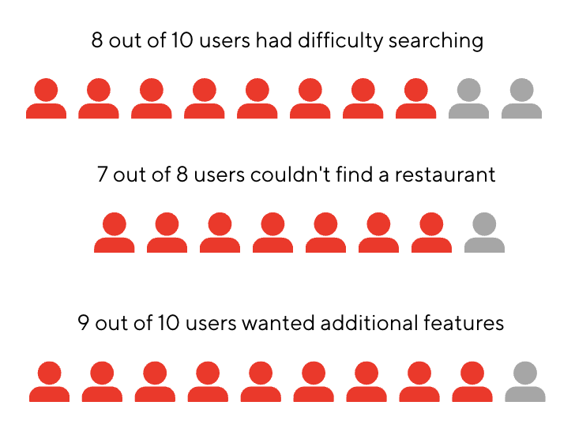
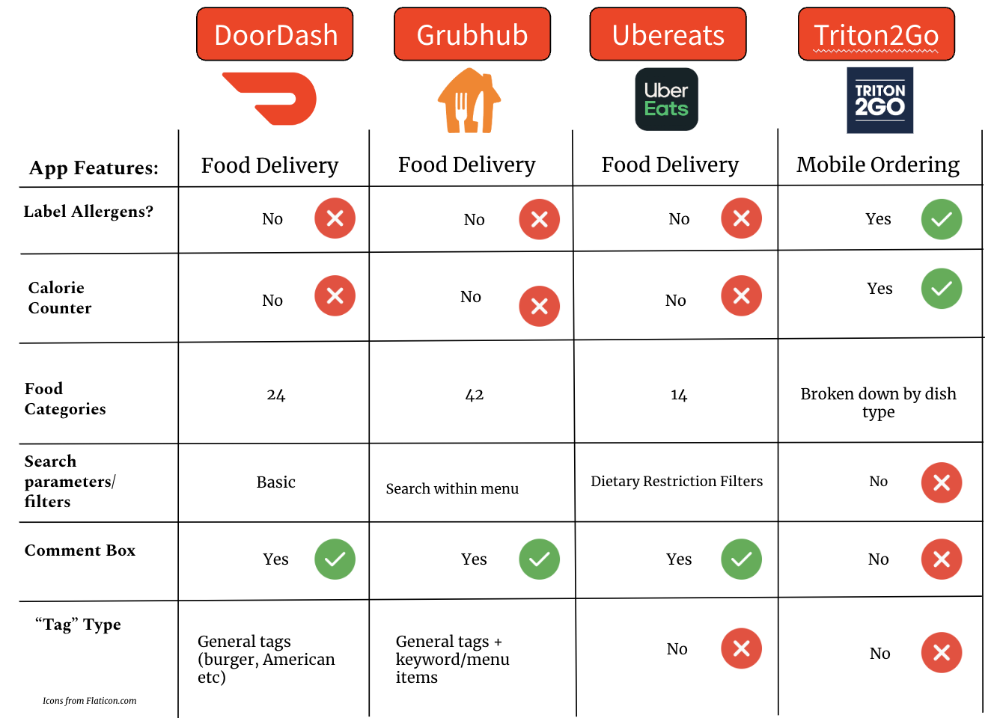
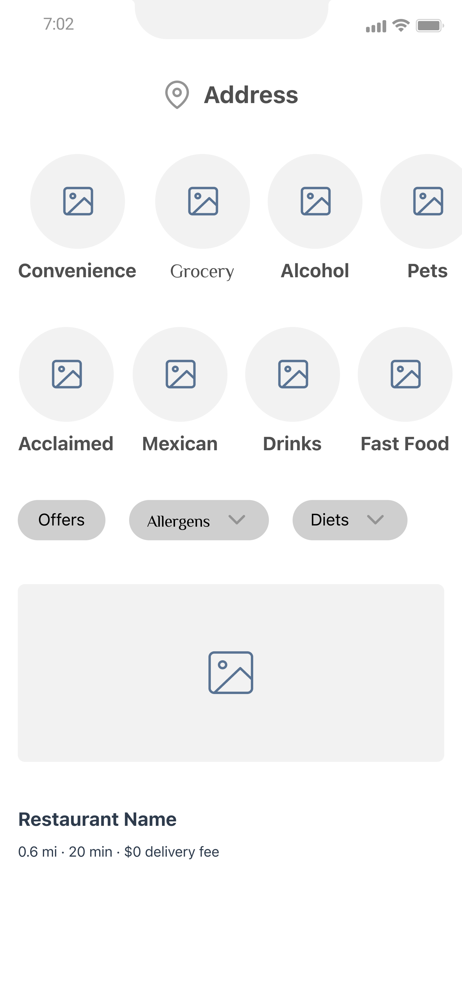
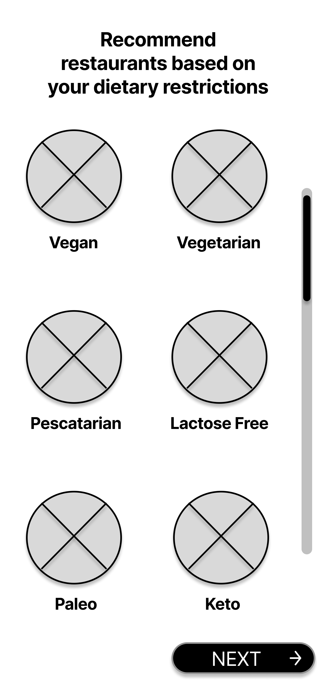
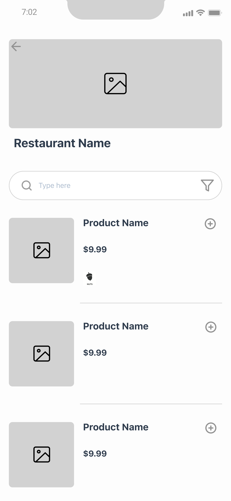
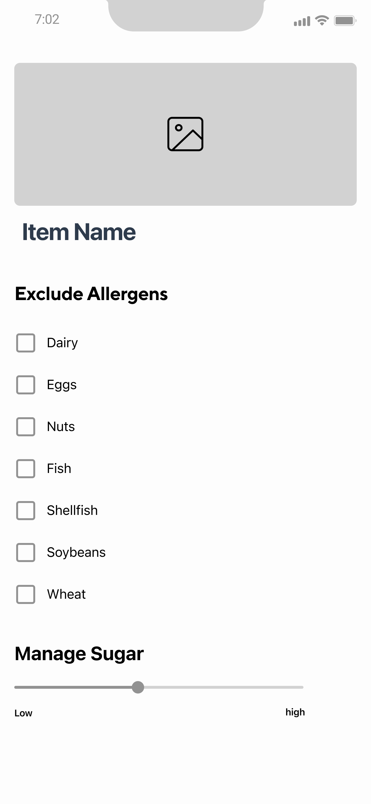

Introduction
While we could have chosen any of the numerous food delivery apps to focus on, we decided to focus on DoorDash due to
its large market share. within the United States. We wanted to find ways to allow consumers to make
healthier since healthy isn't exactly the word that comes to mind when talking about food delivery. More specifically, we wanted to focus on a group
of people that we felt weren't really having their needs met, which were people with dietary restrictions.
This includes the millions of people who don't eat certain foods like pork due to religious reasons,
as well as vegetarians and flexitiarians, who make up 14% of the population.
And this number will only increase as movements like "Meatless Monday" become more popularized, and as we begin to further understand human implications in regards to climate change.
We believe that by adding additional features like icons and increased filtering ability, it will not only benefit users with these types of restrictions but
users in general to help them maintain healthy lives as well as help protect our environment.
And this led to our main questions:
In what ways can we help people with dietary restrictions:
- Identify items that match their individual needs more efficiently
- Communicate their dietary restrictions to the restaurant effectively, so those ingredients can be excluded from their order
- Correctly get recommended food/restaurants that fit their needs
And in order find the best solution possible, we:
- Performed user testing to understand pain points
- Researched other competitive apps/companies
- Created a low-fidelity prototype
- Completed a high-fidelity prototype
- Final thoughts
1. Understanding the User

In our completed interviews with our 10 participants, we found that the majority had some difficulty in finding the types of food they wanted, whether it was having to do background
research out of the app or choosing a different type of food entirely because they couldn’t find the food they initially wanted. Additionally, some other pain points that users
mentioned was the lack of information on the restaurant page itself, which meant that they needed to selectively go into each restaurant page, search for the food,
exit and repeat until they find a dish or restaurant that was suitable to their needs.
Because of this, from our 10 users, 9 wanted additional features like more filters to make it easier to search for food within the main DoorDash page or throughout each restaurant's menu as
well as features like icons next to food menu options to make it more efficient while scrolling without having to open each food description. This would speed up their searching process
as well as give a better overview of what different food types contain like nuts, shellfish, chicken, and allow users to make more informed choices.
Now let's meet Esha Katri and Patrick Stone. Both two very different people with varying needs trying to accomplish the same goal of ordering the right food for their respective needs


We can see that the current features of DoorDash do not sufficiently suffice their needs so what are features we need to add to solve this problem? Let's review what the problem statement is.
The Problem Statement
People with dietary restrictions need to be able to efficiently order food that matches their food restrictions in order to nourish their body during their busy life
2. What about the competition?
Before I discuss the solution our team came up with, let's take a look at the competitive audit I complied to see what other apps are doing that we might incorporate to extend DoorDash's existing features.

As seen from the chart, while DoorDash provides average amounts of information to users compared to other apps.
It can still improve in its features regarding filtering ability and communicating allergen information to users.
Additionally, in improving this, the "tags" feature can also be improved to be more refined allowing users to improve
their ability to find food.
The final comment I have is that while the comment box is very standard across delivery apps,
something that could be improved is creating an alert for users when restaurants manually check they have read the comments.
This way, the user can be more reassured that their comments have been acknowledged to some degree. I will touch up on this
more later.
3. First Prototype
Taking in our users' needs like Esha and Patrick, along with the additional details we gathered from the competitive audit, we drafted a first prototype with 2 alternate UX Designs. The screens below are a combination of the 2 designs. We opted to go with the original DoorDash look, as well as incorporate bigger circle icons with images for the filter selection. We used a pull-up screen for the restaurant filter, and a separate screen during the menu process.




4. Final Prototype
Then after doing some brief user testing, we redesigned a few of the screens for the final high-fidelity prototype.
Our final prototype included the improved filtering mechanisms as well as allergen icon usage to better communicate
information to users. As the designer, I felt that the icons were intuitive, however realized this may not be the case
for all users. To remedy this, I opted to add a 'legend' of sorts that would pop-up when a user clicks on an icon,
giving users more information about each allergen icon.
In addition, I decided to add another feature to the prototype to cover another pain point that was mentioned by Patrick
which involved the comment box. If an restaurant has enabled an additional comments box and an user inputs something there,
then the user will get an alert notifying them that the restaurant has received and 'read' the comment. This extra step may
not completely fix the issue with allergen, but should be a step in the right direction to ease users' mind. Furthermore,
this will also add some accountability to the restaurant as on their end they will have to manually click an option saying
they have read the option. Since our design focuses on the user application side, we will not talk much more about the restaurant
application usage.
Dietary Filters & Icons


Allergen Alert

5. Finishing thoughts & Reflection
By adding these type of features like enhanced filtering ability, icons, and an alert system, not only will users with
dietary restrictions be able to find the food they need more quickly, but it will also allow all users to gain a better
understanding of what is in their food at a quick glance as opposed to reading a long description. Furthermore, by doing
so, DoorDash can also enhance its search function as users can then search up keywords like pork or chicken, and get better
restaurant and food recommendations.
Another key point to add is that with these features, users can better choose their meals to be healthier and also more
environmentally-conscious. It's no secret that high meat consumption is bad for the environment and not very sustainable,
but by making the process easier to find "meatless" meals, it could allow more consumers to partake instead of getting
deterred by inaccurate recommendations or information.
Consumers deserve to know what goes in their food to make the most informed choice, and this can also help restaurants be
more transparent about their ingredients, as well as increase accountability for food delivery interactions between restaurant
and customer.
This was my first design case study and while it was kind of overwhelming to have to do so much
in just 10 weeks, the short time period also meant that we had to stay on track and keep stricter deadlines.
I definitely learned so much during these 10 weeks, and loved getting to learn more about Figma and using the prototypes feature.
I also enjoyed gaining a deeper perspective of what a case study entails, and the different methods for conducting good user research and testing.
Big shout-out to my team and their work on this project, as well as the instructor and TAs for making this class possible!